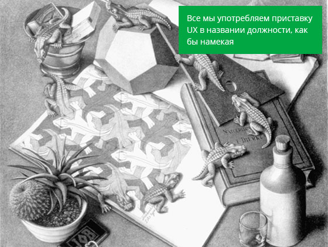

Всё новое - это хорошо забытое старое. Но как этим пользоваться?
О слове “юзабилити” мы узнали относительно недавно, но оно уже успело изрядно подзатаскаться. Юзабилити-специалисты напрочь забыли об удовлетворённости, думая только об эффективности и продуктивности (для бизнеса), называя всё это “удобством”, хотя все эти три термина (эффективность, продуктивность и удовлетворённость) равноправно стоят в определении слова “юзабилити” в стандарте ISO 9241-11.

Скорее всего, одна или несколько из представленных фотографий заставят биться сердце чаще у некоторых читателей, хотя они иллюстрируют скорее процесс, а не результат. Результат без процесса был бы скучен и куда менее приятен. Но мы почему-то забываем об этом, создавая наши цифровые продукты. Особенно отчётливо эта тенденция прослеживается в e-commerce, где абсолютная фокусировка на результат (конверсия любой ценой) отодвигает процесс взаимодействия даже не на второй план.
Просто позвони, мы всё выберем сами. Платить сейчас не нужно, отдашь курьеру, когда тот привезёт товар."
Люди охотно соглашаются на это.
Ну, ещё, наверное, потому что магазин без каталога будет выглядеть как минимум странно. Всё что нам нужно – это лиды (чаще всего нам нужно получить всего лишь номер телефона потенциального покупателя). Мы говорим: “Просто позвони, мы всё выберем сами. Платить сейчас не нужно, отдашь курьеру, когда тот привезёт товар”. Люди охотно соглашаются на это, ведь так проще и быстрее, а времени в интернете (да и в жизни) у нас всегда катастрофически мало, ведь за наше внимание в соседних вкладках воюют ещё с десяток сайтов, плюс в телефоне десяток приложений. А где же шоппинг? Где радость выбора и удовольствие от процесса покупки? Как же возможность самостоятельно реализовать поставленную задачу и получить удовлетворение от достигнутого результата?
О важности переживаний в процессе достижения результата и неотделимости его от самого результата можно понять, рассмотрев более жизненные ситуации. Например, поездка в отпуск, в которой результатом является лежание в шезлонге возле бассейна или же просмотр фотографий по возвращению – для кого что важнее. Хотя это лишь малая часть от всего того набора событий и процессов, которые доставляют не меньшую радость: выбор типа отдыха и страны, покупка билетов, приготовления, перелёт. Всё это предполагает определённые сложности, но именно их мы и называем “приятными хлопотами”, которые делают отпуск полноценным и интересным.
О важности переживаний в процессе достижения результата и неотделимости его от самого результата можно понять, рассмотрев более жизненные ситуации. Например, поездка в отпуск, в которой результатом является лежание в шезлонге возле бассейна или же просмотр фотографий по возвращению – для кого что важнее. Хотя это лишь малая часть от всего того набора событий и процессов, которые доставляют не меньшую радость: выбор типа отдыха и страны, покупка билетов, приготовления, перелёт. Всё это предполагает определённые сложности, но именно их мы и называем “приятными хлопотами”, которые делают отпуск полноценным и интересным.